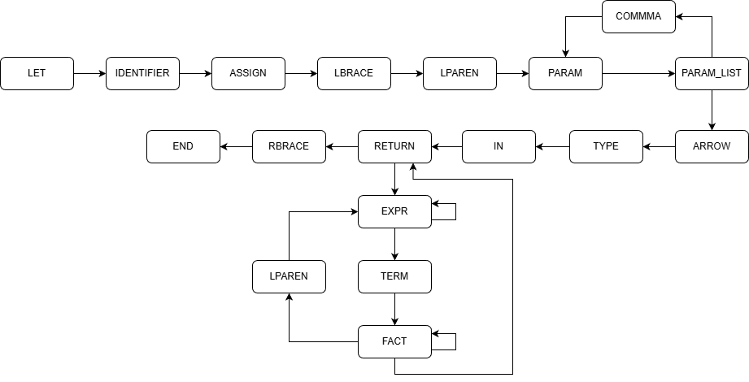

Метод анализа
Для реализации синтаксического анализатора был выбран метод рекурсивного спуска. Данный метод относится к классу нисходящих алгоритмов анализа.

Рис. 1 — Список процедур
Алгоритм работы:
Основные принципы метода:
- Каждому нетерминальному символу грамматики G[<START>] ставится в соответствие отдельная программная функция.
- Процесс анализа начинается с вызова функции, соответствующей целевому символу грамматики.
- Построение дерева разбора осуществляется от корня (целевого символа) к листьям (терминальным символам).
- Анализатор считывает текущий токен и на его основе принимает решение о выборе следующей ветви правила.
Алгоритм работы:
- При обнаружении в правой части правила нетерминального символа происходит рекурсивный вызов соответствующей ему функции.
- При обнаружении терминального символа анализатор сравнивает его с текущим символом входной цепочки.
- Если символы совпадают, указатель текущей позиции перемещается на следующий токен.
- В случае несовпадения инициируется процедура обработки и нейтрализации синтаксических ошибок.